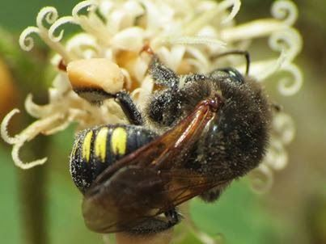

Sobre o Meliponário Rei da Mandaçaia
O Meliponário Rei da Mandaçaia é um empreendimento familiar especializado na criação, conservação e manejo de Abelhas Nativas Sem Ferrão, com ocorrência natural no estado da Bahia, estamos a mais de 30 anos criando, multiplicando e contribuído para preservação destes pequenos magníficos animais.
O nosso empreendimento é cadastrado no IBAMA CTF: 1681253 e na Agência de Defesa Agropecuária da Bahia (ADAB), e enquadrado na Lei Estadula: Nº 13.905 DE 29 DE JANEIRO DE 2018.
Aqui em nosso site é possível encontrar fotos da produção e muitas informações a cerca desta atividade, nosso meliponário principal está situado no Distrito de Hidrolândia - Uibaí e em Cruz das Almas no Recôncavo da Bahia.
Nosso Estabelecimento
Nosso estabelecimento está localizado no coração dda Bahía
Benefícios
- Polinização de plantas nativas
- Impacto ambiental zero
- Negócio familiar
- Poduto 100% natural
- Propriedades medicinais